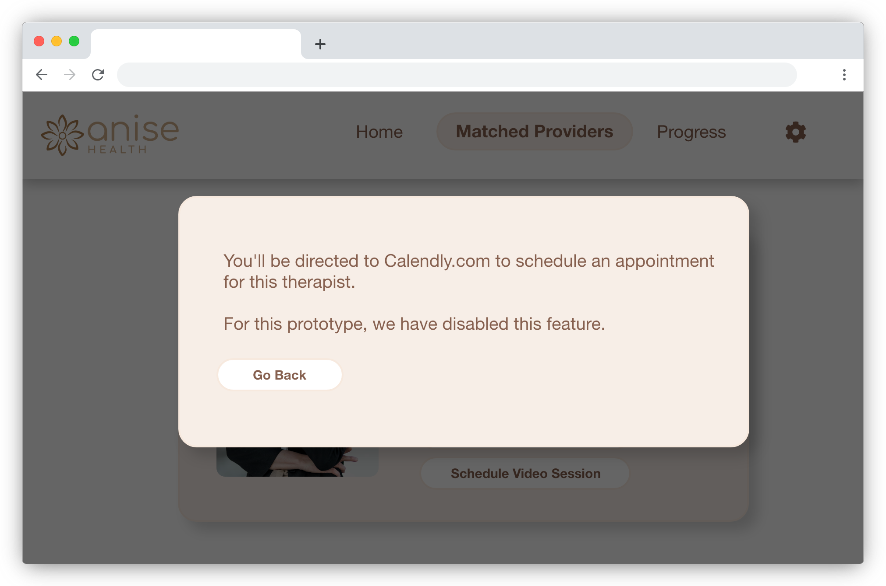
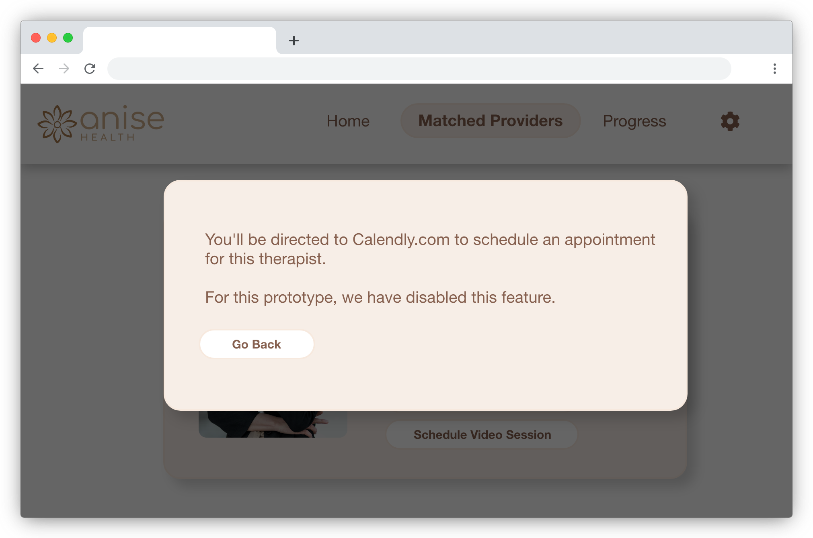

Anise Health is a culturally informed mental health and wellbeing platform that primarily targets the Asian American community. They are an early stage startup born from an accelerator program at Harvard Business School, and they launched their pilot program to 30 participants in July 2021.
Role - UX Design InternAsian cultures have a long-standing stigma towards mental health, which results in high percentages of Asians who need yet do not go to therapy. Anise Health focuses on offering mental health services where providers understand the cultural nuances woven into a person's upbringing and experience. Anise Health launched a pilot program to Asian American participants from California, New York, and Massachusetts. They needed a website portal that allows for clients to participate in the pilot program.
The user website portal for Anise Health’s pilot program will let clients pursue their mental health journey with their provider of choice. Clients can log in, select a therapist, schedule an appointment, and log and track their progress. We will measure effectiveness through a feedback survey after participants complete the month long pilot program.
Due to the fast-paced deadlines and resource constraints of the project, we didn't have time to survey our users ahead of time. I designed our first iteration of designs based off assumed pain points informed through observations:
Statistics reveal that there are more female therapists and clients than male ones. Our choice in pictures, colors, and visual styles need to strike a balance between normative masculine and feminine associations because we want to tell the user that we're for all genders - binary or not.
The Asian demographic covers a wide range of diverse cultures and ethnicities. Choosing the right therapist is an important and personal decision to the client. A variety of options is important, and information should be organized in a way where the client feels that they're making the most informed and best decision for themselves.
Chart and graph data helps clients track and visualize their progress. To help clients stay informed, there's an option to explore resources outside of sessions. Aligning our brand with our data-driven approach helps build credibility, especially for those struggling with the validity of therapy.


 


Type: Moderated usability study
Participants: 7 participants
Location: United States, remote
Length: 45 minutes
The option to schedule a trial call with a provider helped users feel confident in a long-term committed choice.

Sending out a form to assess a client's needs helped us curate the best provider matches. Clients can then view profiles (see previous screen) to make the most informed decision for themselves.
Clients are busy young professionals. Notifying them about a deadline in the sign-up email increased conversion rates.
Draw attention to the call-to-action button with a brighter accent color (green).